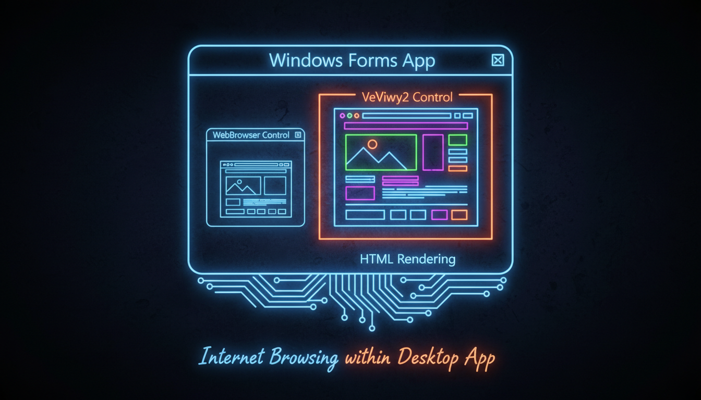

Вбудований браузер, навігація, JavaScript

WebBrowser^ wb = gcnew WebBrowser();
wb->Dock = DockStyle::Fill;
wb->Navigate("https://www.example.com");
// Події
wb->DocumentCompleted += gcnew WebBrowserDocumentCompletedEventHandler(
this, &MyForm::OnDocumentLoaded);
wb->Navigating += gcnew WebBrowserNavigatingEventHandler(
this, &MyForm::OnNavigating);
// Навігація
void btnGo_Click(Object^ s, EventArgs^ e) {
wb->Navigate(txtUrl->Text);
}
void btnBack_Click(Object^ s, EventArgs^ e) {
if (wb->CanGoBack) wb->GoBack();
}
void btnForward_Click(Object^ s, EventArgs^ e) {
if (wb->CanGoForward) wb->GoForward();
}// Потрібно встановити NuGet: Microsoft.Web.WebView2
// WebView2^ webView = gcnew WebView2();
// webView->Source = gcnew Uri("https://www.example.com");
// await webView->EnsureCoreWebView2Async();